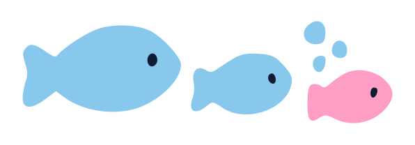

Download list
Your download list
This helps you keep track of the folders you will copy off Lengau and then generate a download script. Tarballs are packed on Lengau in Part 4, and everything is copied to your drive in Part 5.
Keep this page in its own window next to the guide: both pages update as you go.
Nothing is uploaded. Your list, and any snapshot you open, stay in this browser on this computer until you clear its site data. To keep a copy, or carry on in another browser, save your list to a file.

Swim down to your list1. Add a folder by path
Here you can add folders to your download list and decide how to download it
2. Tick folders from a snapshot
Made a snapshot with the faster method on the Choose page? Open it here and tick the folders to keep: each one goes on your list.
On your list
Save or move your list
Save your list to a file to keep a copy, or to carry on in another browser or on another computer. Open the file there and its folders are added to the list, with what you have already copied and checked.